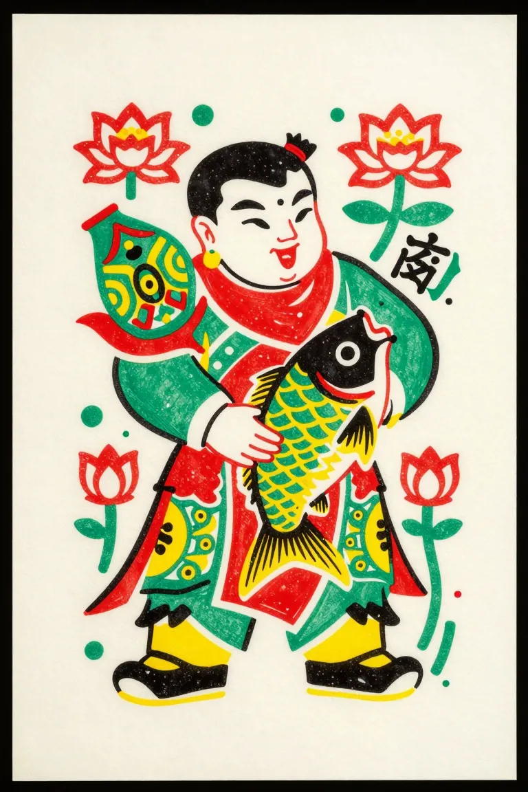

print · c.1600–1950s · also: Nianhua, 年画, Yangliuqing New Year picture, 杨柳青年画, Taohuawu, 桃花坞, Yangjiabu, 杨家埠
Workshops print a key-block outline and fill it with colour blocks, and often add hand-painted colour. Yangliuqing sheets end with hand colour and painted faces. Other towns print bold and flat.

Core thesis
A New Year picture works as a charm for the house, so it must be bright, full of good signs and cheap enough for every door.
Design principles
Print a bold black key outline from a pear or jujube block. Keep the line 1–2 mm wide.
Use 3–8 colour blocks in vermilion, green, yellow and a late aniline magenta.
Fill the sheet with signs of luck: a door god, a fat child, a carp, a peony, a coin.
In Yangliuqing work, paint the faces and the hands over the print, with a fine brush and a white powder ground.
Add gold or lead-white on a robe or a flower, by hand, where the print needs a bright point.
Allow the colour to shift 1–2 mm from the outline. Keep the rough register.
Print thousands of sheets before the New Year, and paste them on doors and walls.